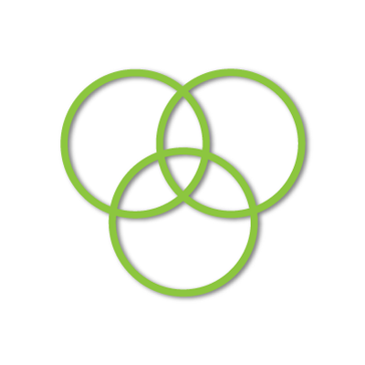

My Toolbox
These aren't the only tools I use, but they are the ones I can't live without right now.
App Development
Ruby on RailsTried and true. Efficient, clean, and fun!
Operating System
LinuxOpen source, with a flavor for almost every need. My prefered distros are Ubuntu and RHEL.
API Development
GolangBlazing fast, supported and developed by the brilliant minds at google. What's not to like?
Version Control
GitPretty much industry standard at this point, still a delightful program.

FrontEnd Development
Mithril.jsLightweight, with a codebase you can read and learn in less than a day, this is my current, preferred javascritp MVC framework.
Web Server
NginxExtremely fast, easily-configurable server with fantastic documentation and community support.